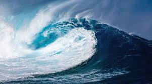

The most famous ocean in the world in Portugal and Paradise for surfing with beatiful islands
-
Azores islands
Azores - a picturesque archipelago in the northern Atlantic Ocean, consisting of nine green islands. The Azores belong to Portugal and lie on the latitude of the city of Lisbon between Europe and North America. They are located 1460 km from Portugal and 3900 km from New York and have the status of the westernmost point of the European continent. The archipelago appeared as a result of volcanic activity, it contains 1766 volcanoes, 9 of which are active.
-
Warm Portugal beaches Praia de Benagil
Praia de Benagil One of the most iconic and heavily photographed caves in the Algarve is located near Carvoeiro in a fishing village called Benagil. The Algar de Benagil is a main standout feature of the local beach and is only accessible by water (travel by boat is the easiest). The Praia de Benagil is much more than this singular “algar” or grotto, however, and is one of the quieter and more secluded spots due to limited parking spaces nearby; also, it is surrounded by steep cliffsides that are common in the Algarv
-

Paradise for surfing
Portugal has a very mild climate with solid surf often with offshore morning breezes are extremely common, making it a popular surfing destination for surfers from inside and outside Europe. Portugal has a huge variety of waves and swell size and as a result makes an ideal surfing location for surfers of every ability. It is a good place to learn to surf with lots of places offering surf lessons and packages. (You can also learn to surf with us)
Fairy tale in the mountains
-
Canadian mountains
The Canadian Rockies cover the provinces of British Columbia and Alberta. They are known for the ice caps of peaked mountain peaks, the highest of which is Robson, as well as pristine lakes, diverse flora and fauna and numerous resort areas. There are several national parks in the mountains: Yoho with a giant Takakkau waterfall, Jasper with the Athabasca Glacier, famous for being easily accessible, and Banff with Lake Louise Glacier.
-
Mountain River
Description Translated from English. The Mountain River is a tributary of the Mackenzie River in Canada’s northwestern territories. Its source is located in the Mackenzie Mountains, near the border of the watershed with the Yukon. It flows east, connecting the Mackenzie River south of the Arctic Circle.
-
Garibald
Garibaldi is a mountain lake in British Columbia in Canada. Located in the southwestern part of the province on the territory of the provincial park of the same name, 70 km north of Vancouver and 19 km south of Whistler. The mirror area of the lake is 9.94 km². Altitude 1484 meters
-
Estes Park, Colo.
About 90 minutes outside of Denver, Estes Park, Colorado, is the adorable, remote town at the foothills of Rocky Mountain National Park. Stay in town – where you’ll be surrounded by wild elk – and take the “Road to the Sky” in the Rocky Mountains for incredible views, hiking, picnics and more wildlife sightings. Estes Park is also home to The Stanley Hotel, the haunted hotel that inspired Stephen King to write “The Shining.” Yes, that’s how remote this little town is, making it perfect for a family vacation in the wilderness.
-
rise in the mountains
Like icebergs or ships in water, continents and their mountains “float” on the denser mantle. High mountains such as the Himalayas are balanced by a keel, or root, that penetrates deeper into the mantle. As the mountains are worn down by erosion, the weight of the crust is reduced, and the mountains rise.
-
downstream in a boat in the mountains
Driving your vessel on a river you see a channel marker. However, you are unsure which direction you are travelling upstream (in from sea) or downstream (out to sea). Determine whether you’re travelling upstream or downstream.